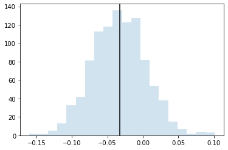

[ ]:
#!pip install qulacs
#!pip install qulacsvis
#!pip install matplotlib
#!pip install numpy
#!pip install scipy
[1]:
from qulacs import Observable, QuantumState, QuantumCircuit
from qulacsvis import circuit_drawer
import numpy as np
import matplotlib.pyplot as plt
サンプリングによってオブザーバブルの期待値を推定する#
オブザーバブルを定義する#
ここでは1次元ハイゼンベルグ模型
\[H = \sum_{i} J_{i} (X_iX_{i+1} + Y_iY_{1+1} + Z_iZ_{i+1})\]
を考える
[2]:
n_qubits = 4
hamiltonian = Observable(n_qubits)
np.random.seed(1)
J_list = 2*np.random.rand(n_qubits)-1
for i in range(n_qubits):
hamiltonian.add_operator(J_list[i], f"X {i} X {(i+1)%n_qubits}")
hamiltonian.add_operator(J_list[i], f"Y {i} Y {(i+1)%n_qubits}")
hamiltonian.add_operator(J_list[i], f"Z {i} Z {(i+1)%n_qubits}")
適当な状態を準備する#
期待値測定をする対象として、適当な回路を通した状態を準備します。
[3]:
state = QuantumState(n_qubits)
circuit = QuantumCircuit(n_qubits)
depth = 2
np.random.seed(2)
for d in range(depth):
for i in range(n_qubits):
circuit.add_U3_gate(i, *(2*np.pi*np.random.rand(3)))
for i in range(n_qubits//2):
circuit.add_CZ_gate((i+d%2)%n_qubits, (i+1+d%2)%n_qubits)
circuit.update_quantum_state(state)
circuit_drawer(circuit, "mpl")
厳密な期待値を計算すると以下のようになります。これをサンプリングによって再現するのが目標です。
[4]:
hamiltonian.get_expectation_value(state)
[4]:
-0.37299366575662646
サンプリングをしてみる。#
\(Z\) のサンプリング#
\(H_{ZZ} = \sum_i J_i Z_iZ_{i+1}\) の期待値 \(\langle H \rangle\) を求めよう。\(Z\) の固有ベクトルは \(|0\rangle\), \(|1\rangle\) なので、そのままサンプリングすれば OK です。
変数
mask_listの中身はそれぞれ、\(Z_0 Z_1, Z_1 Z_2, Z_2 Z_3, Z_3 Z_0\)に対応しています。(\(Z_i\)を使う場合、0bxxxxの右からi番目を1にする)[5]:
def sample_ZZ(_n_shots):
global J_list, state
samples = state.sampling(_n_shots)
estimated_Z_energy = 0
mask_list = [0b0011, 0b0110, 0b1100, 0b1001]
for s in samples:
for J, mask in zip(J_list, mask_list):
bitcount = bin(s & mask).count("1")
# print(f"{s:04b}, {bitcount}, {mask:04b}")
estimated_Z_energy += J*(-1)**bitcount/_n_shots
return estimated_Z_energy
1000個のビット列のサンプリングを1000回繰り返してヒストグラムに表示します
[6]:
n_test = 1000
n_shots = 1000
result_list_ZZ = np.zeros(n_test)
for i in range(n_test):
result_list_ZZ[i] = sample_ZZ(n_shots)
plt.hist(result_list_ZZ, alpha=0.2, bins=20)
hamiltonian_ZZ = Observable(n_qubits)
for i in range(n_qubits):
hamiltonian_ZZ.add_operator(J_list[i], f"Z {i} Z {(i+1)%n_qubits}")
plt.axvline(hamiltonian_ZZ.get_expectation_value(state), color="black")
plt.show()

\(X\) のサンプリング#
\(X\) のサンプリングはそのままではできないです。\(X=HZH\) を使って期待値を推定します。
[ ]:
# 演習
def sample_XX(_n_shots):
pass
[ ]:
n_test = 1000
n_shots = 1000
result_list_XX = np.zeros(n_test)
for i in range(n_test):
result_list_XX[i] = sample_XX(n_shots)
plt.hist(result_list_XX, alpha=0.2, bins=20)
hamiltonian_XX = Observable(n_qubits)
for i in range(n_qubits):
hamiltonian_XX.add_operator(J_list[i], f"X {i} X {(i+1)%n_qubits}")
plt.axvline(hamiltonian_XX.get_expectation_value(state), color="black")
plt.show()
\(Y\) のサンプリング#
\(Y\) のサンプリングもそのままではできないので、\(Y = SH Z HS^\dagger\) を使って推定します。
[ ]:
# 演習
def sample_YY(_n_shots):
pass
[ ]:
n_test = 1000
n_shots = 1000
result_list_YY = np.zeros(n_test)
for i in range(n_test):
result_list_YY[i] = sample_YY(n_shots)
plt.hist(result_list_YY, alpha=0.2, bins=20)
hamiltonian_YY = Observable(n_qubits)
for i in range(n_qubits):
hamiltonian_YY.add_operator(J_list[i], f"Y {i} Y {(i+1)%n_qubits}")
plt.axvline(hamiltonian_YY.get_expectation_value(state), color="black")
plt.show()
全体のサンプリング結果#
エネルギー期待値は
\[\langle H \rangle = \langle H_{XX} \rangle + \langle H_{YY} \rangle + \langle H_{ZZ} \rangle\]
で求められます。
[ ]:
result_list_total = result_list_XX + result_list_YY + result_list_ZZ
plt.hist(result_list_total, alpha=0.2, bins=20)
plt.axvline(hamiltonian.get_expectation_value(state), color="black")
plt.show()